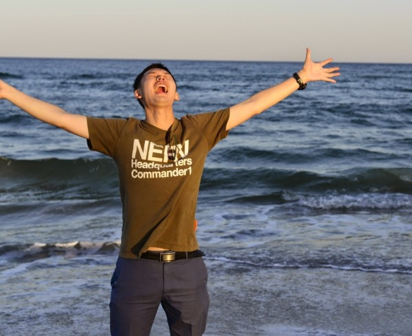

Fangjian Guo
|  | Second-Year PhD student Department of Computer Science, This site is mirrored at |
{kind=link}
Contact

Academic:

Personal:

GitHub
Address
Duke University Department of Computer Science
LSRC Building D125, 308 Research Dr, Campus Box 90129
Durham NC 27708-0129
Research Interests
Machine learning in general — a summary of current research.
Stochastic processes
Natural Language Processing
Scalable Bayesian inference
Bayes Nonparametrics
How humans organize, interact and behave (e.g. social networks, human dynamics, etc.)
The connection between learning and Statistical physics (e.g. Monte Carlo, Ising and graphical models, Belief propagation, etc.)
Short Bio
I am now a second-year PhD in the Department Computer Science, Duke University. I am working on machine learning with Professor Katherine Heller in the wonderful Duke Statistical Machine Learning Group.
Before that, I got my bachelors degree in computer science from University of Electronic Science and Technology of China (UESTC) in Chengdu, Sichuan. (Chengdu is my 2nd hometown where I lived for 7 years.) I was a member of its Yingcai Experimental School, where I attended a comprehensive spectrum of courses in science and engineering (math & physics are fun, while circuits are not…). As part of my undergraduate studies, I worked with Prof. Tao Zhou on a few research topics related to human behaviors and social networks, including ranking algorithms, modeling social network evolution and statistical properties of human behaviors.
Even before that, I grew up in Deyang, Sichuan, in the community of a huge state-owned factory (heavy industrial parts still evoke my childhood belongingness), where most of my family members are/were working. Then I attended the century-old Chengdu No. 7 High School.
While being a CS major, physics has also been my long-time fascination. I am interested in research that explores the deep connections between machine learning and statistical physics.
What's new

[2015/01] Our conversation modeling paper gets into AISTATS 2015!
[2014/12] Looking for a research intern over the upcoming summer. Interested in R&D positions in machine learning, NLP and analytics. This is a brief summary of my ongoing research.
[2014/12] Attending NIPS 2014 at Montreal. Will be presenting a poster at Networks Workshop: From Graphs to Rich Data.
[2014/11] Working with Samuel Wang on novel ensemble learning algorithms powered by DPP.
[2014/10] Attending The 5th Annual Text as Data Conference at Kellogg School of Management, Northwestern University. Hanna gave a great talk on our conversation modeling work.
[2014/08] OMG! This is already my third semester at Duke! These are the courses I am taking now. Hopefully, I can learn how to envision, infer and measure.
CPS 571: Computer Vision, taught by Prof. Tomasi
ECE 590: Graphical Models and Inference, taught by Prof. Pfister
STA 711: Probability and Measure Theory, taught by Prof. Wolpert
[2014/08] This Fall, I work as TA with Prof. Sayan Mukherjee on STA 561/CPS 571 Probabilistic Machine Learning. We also have a Piazza page.
[2014/06] Will be hanging around ICML 2014 at Beijing. Shoot me an email if you also happen to be there and interested in chatting with me (I'd be happy to meet u!).
[2014/06] Submitted something to NIPS.
[2014/03] Working on modeling the dynamics of interpersonal communication with Hawkes process and other Bayes nonparametric methods. Meanwhile, started to learn playing guitar.
[2014/03] Declared my advisor! Glad to be (one of) her first student. :)
[2014/01] This Spring, I work as TA with Prof. Parr on CPS 270: Introduction to Artificial Intelligence (Piazza).
[2014/01] Hmm, my second semester for the new year. I am taking
CPS 590: Advanced Machine Learning, taught by Prof. Heller
STA 960: Statistical Stochastic Processes, taught by Prof. Wolpert
STA 732: Statistical Inference, taught by Prof. Tokdar
[2013/09] For my first semester in Duke (2013 Fall), I am taking
STA 561: Statistical machine learning, taught by Prof. Engelhardt
STA 601: Bayesian and modern statistics, taught by Prof. Dunson
CPS 530: Design and analysis of algorithms, taught by Prof. Panigrahi
[2013/08] I joined Duke as a PhD student in computer science! A fresh blue devil now!
[2013/08] The paper below appeared on Physica A.
[2013/07] I attended STATPHYS 25 in Seoul, Korea. The place and people are lovely!
[2013/06] I defended my bachelor's thesis and graduated from UESTC with the highest distinction. Farewell, my dear fella and good old days!
[2013/03] Our link-prediction paper Predicting link directions via a recursive subgraph-based ranking coauthored by me and my collaborators is accepted by Physica A.
[2013/03] I made an introductory lecture on mathematical modeling for 1st-year and 2nd-year undergraduates in my home university. Slides can be found here.
[2013/03] I am back from my visiting at City University of Hong Kong. I am continuing the new studies on the “viral marketing” in social networks growth in collaboration with Prof. Jonathan Zhu.
[2013/01] I made a presentation titled ‘‘Memory in Bursty Systems’’ at a winter school held at UESTC and discussed relevant problems with Prof. Beom Jun Kim from Sungkyunkwan University, Korea.
[2013/01] New updates on my project investigating the relation between memory (autocorrelation) and power-law.
[2012/12] I served as a visiting Research Assistant at Web Mining Lab, City University of Hong Kong. I was working in CityU from Dec 2012 to Feb 2013. I studied the structural evolution of social networks under advisory of Prof. Jonathan Zhu.
[2012/12] I feel honored to be awarded as one of the Outstanding Students in my university, the highest honor for UESTC graduates. (10 out of 4,500 undergraduates in 09’)
[2012/12] I have just found (with glad surprise) that my paper on ranking and direction has been cited and used by Sucheta Soundarajan and Prof. John E. Hopcroft at Cornell CS.
[2012/11] I am currently working on the project of the memory of power-law random series, see my projects for more information.
Hobbies
Typography & typesetting
Graphical design
Classical poetry (mostly Chinese)
Badminton
Reading The Hitchhiker's Guide to the Galaxy and other stuff of this flavor!
Physics (and yes, it is a hobby)
Exploring other interesting stuff (and yes, it is a recursion)